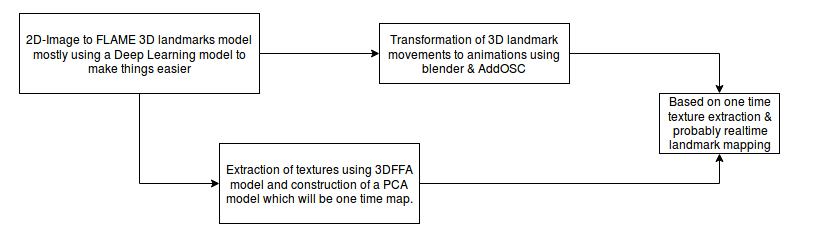

Conversion of a video sequence to a Avatar's GIF/video sequence.
Recently a lot research has been taking place in the region of combination of Computer Graphics & Computer Vision areas and the standards are being expected to raise after apple's introduction of Iphone X which have cutdown a lot of efforts in coverting the 2D-3D mapping using its front camera which seems to project a huge number of IR rays to estimate the geometry of the human face but it is really hard for a normal person to afford such high costs so I myself being an Indian and want to make it available to the normal families to experience such high end technolgies which would build more passion towards learning have taken up this project as one of my most import project and am planning to work in parallel along with mathematical visualization of Machine Learning and its advancements.

I would like to keep this as a log which will help me remember the flow of work which I have planned to implement this work. It has really taken a lot of time since I am all by myself if having any advisor would have made work a bit more easier since with their experience I probably would have been directed to this point, Since I first became aware of this 3D Face Reconstruction technology based on the works of Prof.Ira Kemelmacher - UW CSE, I was first trying to understand the Shape from Shading, Structure from Motion techniques since I being from an EE background never had a chance to take up an Computer Graphics course even though I had taken up Computer Vision course in my final semester I wasn't much interested at that point of time since my drive was always towards the mathematical concepts that have been entangled either be it Machine Learning / Computer Vision / Medical Imaging or anything i was just addicted to the understanding of concepts on my own since I felt I would lose the kick/joy which I would gain during learning it after reading pages after pages sadly I was into that buble I kept reading papers after papers even till today I am doing the same but I realisez it is the time to take some action instead of aiming for one big ball, I should first pick up the lego pieces and try to join once after the other. Sorry I have gone completely out of the topic coming back, Every time I try to think about this problem how to make the 2D-3D interaction in a way with lesser complexity and higher accessibility always diffrent combinations of pipelines pop up in my mind instead I have decided I should implement one at first then it would make me clear during the implementation process how to permute the blocks in the pipeleine.
Comments
Comments powered by Disqus